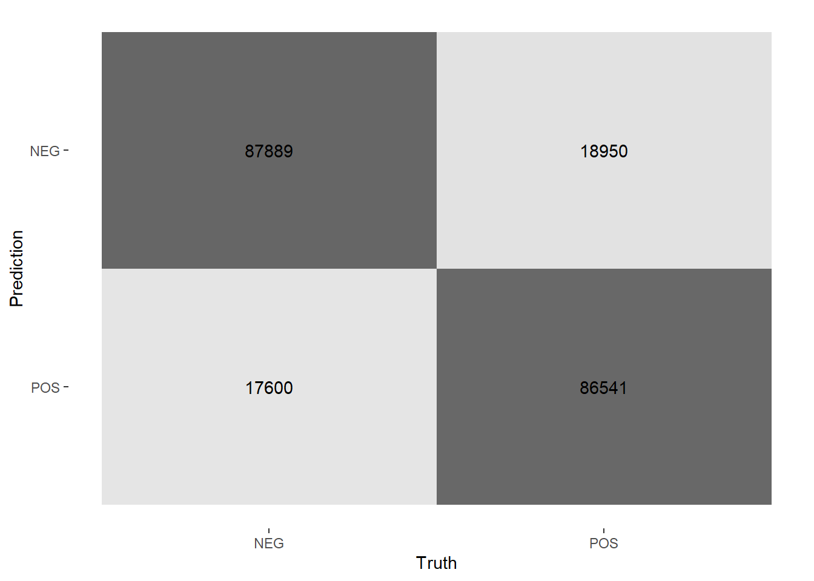

Chapter 9 Beyond the MVP: Support Vector Machine Classification
9.1 Introduction
In this section, I will extend the minimum viable project (MVP) in the last section and build a support vector machine (SVM) classifier to predict Yelp reviews’ star ratings. This time, instead of just using AFINN sentiment as the model input, I’ll predict ratings based on each review’s text, its word length, and its AFINN sentiment. I will again be predicting positive (“POS”) and negative (“NEG”) ratings following Liu (2015)’s recommendation, and use the approaches outlined in Silge and Hvitfeldt (2020) and Silge and Robinson (2020). In some cases I have used examples or hints from websites like Stack Overflow, and I’ve noted that where applicable.
Based on some initial experiments, after loading 200,000 Yelp reviews I will use an aggressive train/test split to use 5% of the data for model training and then test its performance on the other 95%. There are two reasons for this. The first reason is pragmatic: I have much more data than processing power, and 5% of the data amounts to 11,106 reviews which already takes nearly 20 minutes to run through an SVM on my machine. The second reason is optimistic: based on some earlier experiments, I have reason to think that roughly 10,000 reviews is enough to train a decent model, so I would like to seize on this huge dataset to do a really robust test.
9.2 SVM Classifiers
A support vector machine (SVM) classifier is a mathematical model that assigns observations to one of two classes. The mathematics are complicated, so here I will present a brief non-technical summary based on Hastie, Tibshirani, and Friedman (2009)’s exposition (pp. 417-438).
Imagine a dataset consisting of \(N\) pairs \((x_1,y_1),(x_2,y_2),\ldots,(x_N,y_N)\), where the \(x_i\in\mathbb{R}^p\) and the \(y_i\in\{-1,1\}\). In other words, our observations are situated somewhere in a \(p\)-dimensional Euclidean space with coordinates \(x_i\), and also belong to one of two classes given by \(y_i\). Intuitively, we could set \(p=2\) and imagine throwing a handful of pennies onto a tabletop: each penny has some position on the tabletop that we could label \(x_i\), and each penny is either heads or tails, which we could label \(y_i\).
For our tabletop example, if we’re lucky we might be able to draw a straight line separating all the heads and tails. In more general cases we may be able to define a hyperplane that separates all instances of the two classes. We can call these situations “separable,” and the general approach here is to find the hyperplane that divides the two classes with the widest margin \(M\) possible on both sides.
In other cases, however, there might be some heads mixed in with the tails, so it may be impossible to draw a straight line or hyperplane that cleanly separates the two classes. If so, we can generalize our approach to permit some misclassifications. The problem then is to find the hyperplane that minimizes the number and degree of misclassifications: in other words, to minimize the number of points on the wrong side of the dividing line and to minimize their distance from it. This is the intuition behind a support vector classifier.
A support vector machine classifier generalizes the support vector classifier to the case where the boundary is non-linear. Roughly, an SVM expands the input feature space (i.e. the \(x_i\)) using potentially non-linear transformations and then solves the classification problem in this larger space. Linear boundaries in this larger space will generally correspond to non-linear boundaries in the original space, so intuitively this means we are now considering the possibility that we could draw curved lines in our original space to separate our two classes. The details, however, are highly technical, and the reader is referred to Hastie, Tibshirani, and Friedman (2009) (417-438) for more information.
9.3 Preparing the Data
I will again work with the large Yelp dataset available at this link, this time loading the first 500k reviews.
This code block does the following:
- Load our data;
- Factor it into POS (4-5 stars) and NEG (1-2 stars);
- Balance POS and NEG by random downsampling;
- Get each review’s AFINN sentiment score; and
- Get each review’s word count.
set.seed(1234)
# figure out how to do it reading between the lines of this stackoverflow:
# https://stackoverflow.com/questions/53277351/read-first-1000-lines-from-very-big-json-lines-file-r
yelp_big_factor <- readLines("../tests/data/yelp_academic_dataset_review.json", n = 500000) %>%
textConnection() %>%
jsonlite::stream_in(verbose=FALSE) %>%
select(stars, text) %>%
mutate(rating_factor = case_when(
stars < 3 ~ "NEG",
stars > 3 ~ "POS") %>%
as.factor()
) %>%
select(-stars) %>%
drop_na()
# random downsampling to balance POS and NEG in the dataset
yelp_balanced <- yelp_big_factor %>%
filter(rating_factor == "NEG") %>%
bind_rows(yelp_big_factor%>%
filter(rating_factor == "POS") %>%
slice_sample(n=yelp_big_factor %>% filter(rating_factor == "NEG") %>% nrow() ))
# get AFINN scores for each review
tic()
afinn_yelp_big <- yelp_balanced %>%
rowid_to_column() %>%
tidytext::unnest_tokens(word, text) %>%
left_join(afinn) %>%
group_by(rowid) %>%
summarise(afinn_sent = sum(value, na.rm = T))
toc()
# add the AFINN scores to the original tibble
yelp_big_bal_afinn <- afinn_yelp_big %>%
left_join(yelp_balanced %>% rowid_to_column()) %>%
select(-rowid)
# get wordcounts
wordcounts_yp <- yelp_big_bal_afinn %>%
select(text) %>%
rowid_to_column() %>%
tidytext::unnest_tokens(word, text) %>%
group_by(rowid) %>%
summarise(n = n()) %>%
arrange(n) %>%
mutate(id = 1,
cumdist = cumsum(id))
# add wordcounts to create final dataset
yelp_data <- bind_cols(
yelp_big_bal_afinn,
wordcounts_yp %>%
arrange(rowid) %>%
select(words = n))
# remove transient datasets, keep only the final one
rm (yelp_big, yelp_big_factor, yelp_balanced, afinn_yelp_big, yelp_big_bal_afinn, wordcounts_yp)Then we’ll create a train/test split on the entire dataset, using 5% for training and 95% for testing.
set.seed(1234)
yelp_split <- initial_split(yelp_data,
strata = rating_factor,
prop = 0.05)
yelp_train <- training(yelp_split)
yelp_test <- testing(yelp_split)Then we set up ten cross-validation folds that we will use to evaluate the models we build using our training data.
9.4 SVM Classification
First we set up our SVM model, here using the liquidSVM package following Silge and Hvitfeldt (2020).
## Radial Basis Function Support Vector Machine Specification (classification)
##
## Computational engine: liquidSVMNext we’ll set up an SVM recipe based on entirely on text tokens. A good next step would be to use what I’ve learned in earlier sections, for example by including negators, word count, and sentiment, but to keep it simple we’ll leave them out here.
We’ll process our text using these steps:
- Tokenizing the text into words;
- Removing stopwords from the default “snowball” dictionary;
- Filtering out tokens that occur fewer than 50 times;
- Choosing a maximum number of tokens, which we will tune as a hyperparameter; and,
- Applying a TFIDF to the text.
We could also consider n-grams (i.e. considering n-word strings of text), which might be useful for catching negators. I’ve included the code in this block but commented it out. For now we’ll stick with individual words.
yelp_rec <-
recipe(rating_factor ~ text, #+ words + afinn_sent,
data = yelp_train) %>%
step_tokenize(text) %>%
step_stopwords(text) %>%
# step_ngram(text, min_num_tokens = 1L, num_tokens = 1) %>%
step_tokenfilter(text,
max_tokens = tune(),
min_times = 50) %>%
step_tfidf(text)
yelp_rec## Data Recipe
##
## Inputs:
##
## role #variables
## outcome 1
## predictor 1
##
## Operations:
##
## Tokenization for text
## Stop word removal for text
## Text filtering for text
## Term frequency-inverse document frequency with textNext we set up our workflow:
## == Workflow =========================================================================================================================================================================================================================
## Preprocessor: Recipe
## Model: svm_rbf()
##
## -- Preprocessor ---------------------------------------------------------------------------------------------------------------------------------------------------------------------------------------------------------------------
## 4 Recipe Steps
##
## * step_tokenize()
## * step_stopwords()
## * step_tokenfilter()
## * step_tfidf()
##
## -- Model ----------------------------------------------------------------------------------------------------------------------------------------------------------------------------------------------------------------------------
## Radial Basis Function Support Vector Machine Specification (classification)
##
## Computational engine: liquidSVMWe have set up our recipe to let us try several different values for the maximum number of tokens, so here we’ll set up grid of values to test. Based on some scratch work, I’m going to use three values between 500 and 1250.
Here we set up tuning grid and tune our model on the cv-folds we’ve set up. On an initial test run using 20k Yelp reviews (~9k after balancing) this took ~480 seconds (8 min). With 11,106 training inputs and only 1-grams it takes ~1200s (20 min) on my machine. With 11,106 training inputs and 1-, 2-, and 3-grams it takes ~ 2300s (38 min).
set.seed(1234)
tic()
tune_rs_svm <- tune_grid(
svm_wf,
yelp_folds,
grid = param_grid,
metrics = metric_set(accuracy, sensitivity, specificity),
control = control_resamples(save_pred = TRUE)
)
toc()Now we can evaluate our modeling by looking at the accuracy across our tuning grid:
| max_tokens | .metric | .estimator | mean | n | std_err | .config |
|---|---|---|---|---|---|---|
| 1250 | accuracy | binary | 0.8928513 | 10 | 0.0036235 | Preprocessor3_Model1 |
| 875 | accuracy | binary | 0.8913215 | 10 | 0.0025463 | Preprocessor2_Model1 |
| 500 | accuracy | binary | 0.8789849 | 10 | 0.0029043 | Preprocessor1_Model1 |
The accuracy was particularly surprisingly good across for each number of tokens. Since we got the best results using 1250 tokens, we’ll use 1250 for the rest of our experiment.
Then we finalize our workflow using the results of our model tuning.
best_accuracy <- select_best(tune_rs_svm, "accuracy")
svm_wf_final <- finalize_workflow(
svm_wf,
best_accuracy
)At this point, Silge and Hvitfeldt (2020) says we use last_fit() to fit our model to our training data and evaluate it on our testing data. On initial runs, this worked and gave a final accuracy rate of roughly 83%. But two problems arose:
- It stopped working reliably! I have no idea what changed, but all of my code started to crash at the
last_fit()stage. Even behind-the-scenes scratch work now crashes, despite working fine a few days ago. But then it worked again when I tried to knit the final version of this document! - When it did work, I couldn’t use the final fit object to make predictions. After reading the documentation, it does seem that objects created by
last_fit()includes the fitted workflow in a list column called.workflow. However, it took me a while to figure this out, and by the time I didlast_fit()had stopped working.
When it did work unexpectedly I saved the results to file, and the rest of this report uses the saved results. Here is the the code that worked sporadically:
# get final results
final_res <- svm_wf_final %>%
last_fit(yelp_split,
metrics = metric_set(accuracy))We can then see the results which look quite good, with roughly 83% accuracy on the test data:
# Then we can see results with `collect_metrics()` and `collect_predictions()`.
final_res_metrics <- collect_metrics(final_res)
final_res_predictions <- collect_predictions(final_res)
final_res_metrics %>%
knitr::kable()| .metric | .estimator | .estimate | .config |
|---|---|---|---|
| accuracy | binary | 0.8267608 | Preprocessor1_Model1 |
And Figure ?? shows a heatmap of the confusion matrix. The off-diagonals look reasonably symmetric, so the model isn’t biased significantly.
# Visualize the model's performance with a heatmap of the confusion matrix.
# When it worked, the results were nearly symmetric.
final_res_predictions %>%
conf_mat(truth = rating_factor, estimate = .pred_class) %>%
autoplot(type = "heatmap")
9.5 Predicting with last_fit()
Now we’ll try to use the results from last_fit() to predict a new result. Here we’ll pull the fitted workflow and try to use it to predict the values for the test set.
But this code fails!
wf <- final_res$.workflow[[1]]
test <- wf %>%
predict(new_data = yelp_test[1:10,])
yelp_test %>%
bind_cols(test) %>%
mutate(correct = (.pred_class == rating_factor)) %>%
summarise(sum(correct) / n())We get the following output:
SVM not known from cookie 35 cookies.size: 0! Error in test.liquidSVM(model = object, newdata = newdata, labels = 0, : Should not happen!! liquid_svm_test
This concludes my experiment with last_fit().
9.6 Fitting and Predicting Using fit()
Instead of using last_fit(), we should be able to just use fit() to fit our final workflow to our training data. This creates a fitted workflow object that includes our preprocessing recipe and our fitted model. It’s a 20.4 MB file when saved to disk.
## == Workflow [trained] ===============================================================================================================================================================================================================
## Preprocessor: Recipe
## Model: svm_rbf()
##
## -- Preprocessor ---------------------------------------------------------------------------------------------------------------------------------------------------------------------------------------------------------------------
## 4 Recipe Steps
##
## * step_tokenize()
## * step_stopwords()
## * step_tokenfilter()
## * step_tfidf()
##
## -- Model ----------------------------------------------------------------------------------------------------------------------------------------------------------------------------------------------------------------------------
## SVM model on 877 features (cookie=33)
## Formula: new("formula", .S3Class = "formula", structure(list(), class = "formula", .Environment = <environment>))
## trained and selected on a 10x706 grid
## has a $last_result because there has been predicting or testingThen we can use our final_fit object to predict rating factors for our test data.
To evaluate our fit, we can bind our prediction columns to our test data and check to see how often the true and predicted ratings agree.
yelp_test <- bind_cols(yelp_test, preds) %>%
mutate(correct = (.pred_class == rating_factor))
yelp_test %>%
summarise(sum(correct) / n())## # A tibble: 1 x 1
## `sum(correct)/n()`
## <dbl>
## 1 0.671But now our accuracy drops to 67% and I’m not sure why! According to the help docs last_fit() is supposed to “[f]it the final best model to the training set and evaluate the test set,” and that’s exactly what I did above. But the results here are quite different.
Since the SVM process is slow and since I’ve had some kind of toolchain breakdown, I wasn’t able to get to the root of the problem in time for this week’s report.
9.7 Conclusions
In this section I created a support vector machine (SVM) classifier model to predict whether Yelp reviews were positive or negative based on their text. In an initial experiment, according to tune::last_fit() the model achieved ~89% testing accuracy on~11,000 observations, and 83% accuracy on ~211,000 testing observations. However, on subsequent runs tune::last_fit() stopped working. When it started to work again, I wasn’t able to use the fitted model to make predictions. I then fit the final model manually on the training data and tested it against the test data, but the accuracy dropped to 67%.
9.8 SessionInfo
## R version 4.0.2 (2020-06-22)
## Platform: x86_64-w64-mingw32/x64 (64-bit)
## Running under: Windows 10 x64 (build 18363)
##
## Matrix products: default
##
## locale:
## [1] LC_COLLATE=English_Canada.1252 LC_CTYPE=English_Canada.1252
## [3] LC_MONETARY=English_Canada.1252 LC_NUMERIC=C
## [5] LC_TIME=English_Canada.1252
##
## attached base packages:
## [1] stats graphics grDevices utils datasets methods base
##
## other attached packages:
## [1] vip_0.2.2 glmnet_4.0-2 Matrix_1.2-18 lubridate_1.7.9 ggridges_0.5.2
## [6] tictoc_1.0 discrim_0.1.1 yardstick_0.0.7 workflows_0.2.0 tune_0.1.1
## [11] rsample_0.0.8 parsnip_0.1.4 modeldata_0.0.2 infer_0.5.3 dials_0.0.9
## [16] scales_1.1.1 broom_0.7.0 tidymodels_0.1.1 textrecipes_0.3.0 recipes_0.1.13
## [21] tidytext_0.2.5 forcats_0.5.0 stringr_1.4.0 dplyr_1.0.2 purrr_0.3.4
## [26] readr_1.3.1 tidyr_1.1.1 tibble_3.0.3 ggplot2_3.3.2 tidyverse_1.3.0
##
## loaded via a namespace (and not attached):
## [1] colorspace_1.4-1 ellipsis_0.3.1 class_7.3-17 fs_1.5.0
## [5] rstudioapi_0.11 listenv_0.8.0 furrr_0.1.0 farver_2.0.3
## [9] SnowballC_0.7.0 prodlim_2019.11.13 fansi_0.4.1 xml2_1.3.2
## [13] codetools_0.2-16 splines_4.0.2 knitr_1.29 jsonlite_1.7.0
## [17] pROC_1.16.2 dbplyr_1.4.4 compiler_4.0.2 httr_1.4.2
## [21] backports_1.1.7 assertthat_0.2.1 cli_2.0.2 htmltools_0.5.0
## [25] tools_4.0.2 gtable_0.3.0 glue_1.4.1 rappdirs_0.3.1
## [29] Rcpp_1.0.5 cellranger_1.1.0 DiceDesign_1.8-1 vctrs_0.3.2
## [33] iterators_1.0.12 timeDate_3043.102 gower_0.2.2 xfun_0.16
## [37] globals_0.13.0 stopwords_2.0 rvest_0.3.6 lifecycle_0.2.0
## [41] future_1.19.1 MASS_7.3-51.6 ipred_0.9-9 hms_0.5.3
## [45] parallel_4.0.2 yaml_2.2.1 gridExtra_2.3 rpart_4.1-15
## [49] stringi_1.4.6 highr_0.8 tokenizers_0.2.1 foreach_1.5.0
## [53] textdata_0.4.1 lhs_1.0.2 hardhat_0.1.4 shape_1.4.5
## [57] lava_1.6.8 rlang_0.4.7 pkgconfig_2.0.3 evaluate_0.14
## [61] lattice_0.20-41 tidyselect_1.1.0 bookdown_0.20 plyr_1.8.6
## [65] magrittr_1.5 R6_2.4.1 generics_0.0.2 DBI_1.1.0
## [69] pillar_1.4.6 haven_2.3.1 withr_2.2.0 survival_3.1-12
## [73] nnet_7.3-14 janeaustenr_0.1.5 modelr_0.1.8 crayon_1.3.4
## [77] utf8_1.1.4 rmarkdown_2.3 usethis_1.6.1 grid_4.0.2
## [81] readxl_1.3.1 liquidSVM_1.2.4 blob_1.2.1 reprex_0.3.0
## [85] digest_0.6.25 GPfit_1.0-8 munsell_0.5.09.9 References
References
Hastie, Trevor, Robert Tibshirani, and Jerome Friedman. 2009. The Elements of Statistical Learning. Springer Series in Statistics. New York, NY: Springer New York. https://doi.org/10.1007/978-0-387-84858-7.
Liu, Bing. 2015. Sentiment Analysis: Mining Opinions, Sentiments, and Emotions. Cambridge: Cambridge University Press. https://doi.org/10.1017/CBO9781139084789.
Silge, Julia, and Emil Hvitfeldt. 2020. Supervised Machine Learning for Text Analysis in R. https://smltar.com/.
Silge, Julia, and David Robinson. 2020. Text Mining with R: A Tidy Approach. O’Reilly. https://www.tidytextmining.com/index.html.